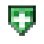

Homes and teleports
Get around the world: spawn, the wild, homes, TPA and warps.
Rules for every teleport
Homes, spawn, warps, the wild, TPA and /back all follow the same rules. A black fade covers the jump.
- Moving during the countdown cancels it.
- It is blocked while you are in combat, checked at the start and every second after, and during a duel.
- After you land, you cannot be hurt for 1 second.
- Countdown
- 3 seconds
- Cost
- Free
- Landing protection
- 1 second
Spawn
Use or to go to spawn. It is free and has no cooldown. It saves your /back point.
The Server Spawn button in the warps menu asks you to confirm first. Set a home before you go if you want to come back, because staff will not teleport you back to where you were.
The wild
and open the same menu: Overworld, Nether or The End, each with a live player count.
| Dimension | Distance from the centre, each direction |
|---|---|
| Overworld | 500 to 14,900 blocks |
| Nether | 250 to 1,800 blocks |
| The End | 1,000 to 8,000 blocks |
The Nether landing is always on solid ground with room to stand, and never next to lava. If the End land has not loaded, you are sent to spawn instead of over the void. You get slow falling while the ground is found.
Cooldown
Without a rank you wait 120 seconds between random teleports, and the wait resets when you log out. CrabPlus, CrabExtra and CrabDemon have no cooldown.
Homes
Set a home with , go to one with , and remove one with . Run any of them without a name, or use , to open the homes menu.
Names cannot contain spaces and must be unique.
| Rank | Free homes | Buyable slots | Most you can have |
|---|---|---|---|
| Member | 1 | 4 | 5 |
 CrabPlus | 11 | 4 | 15 |
| 11 | 4 | 15 | |
| 26 | 4 | 30 |
Extra slots
Buy extra slots from the homes menu, in this order.
| Slot | Price |
|---|---|
| First | 10,000 coins |
| Second | 20,000 coins |
| Third | 30,000 coins |
| Fourth | 40,000 coins |
Where you cannot set a home
- Within 250 blocks of Freeplay.
- Inside the no build area: 1,000 blocks around spawn, the PvP Arena and the duel arena.
- On or past the world border.
Before a fight
Home teleports are blocked in combat, so set a home before you head somewhere dangerous.
TPA
There is no /tpa command. Teleport requests are sent from the menu: open the menu and choose Teleport.
- SendPick a player to ask. You can only teleport to them, not bring them to you.
- ViewAccept or deny requests sent to you.
- CancelWithdraw a request you sent.
Requests expire after 5 minutes, and a player can have one pending request at a time. When it is accepted, the sender teleports after the 3 second countdown. It is blocked if either of you is in combat.
In your settings you can turn on auto accept for TPA requests, and switch the notifications and sound effects on or off.
Back
takes you to where you last died, or where you last used a home, spawn or faction home teleport. It needs the CrabExtra or CrabDemon rank.
The saved point is lost when you log out. Using /back swaps the point, so using it twice takes you back again.
Warps menu
Open it with or . Each button shows how many players are there.
- Server Spawn: asks you to confirm first.
- Your Homes: opens your homes.
- The Wild: picks a dimension for a random teleport.
- Freeplay and KOTH: PvP is on there, so bring gear you are willing to lose.
- PvP Area: the arena or one against one duels.
- AFK Zone: asks you to confirm.